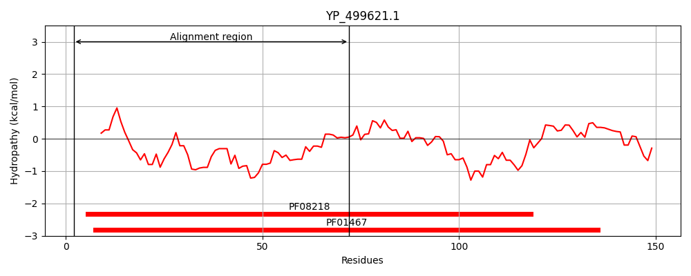
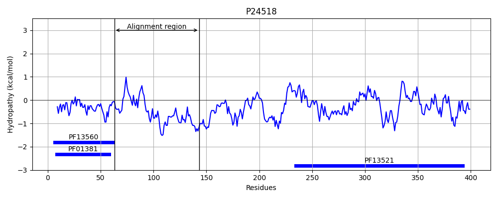
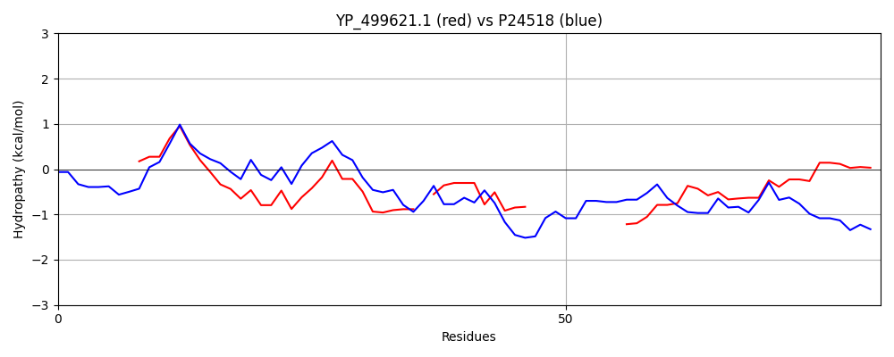

Hit Accession: P24518
Hit TCID: 4.B.1.1.1
Hit Description: gnl|BL_ORD_ID|9502 gnl|TC-DB|P24518|4.B.1.1.1 Transcriptional regulator nadR - Salmonella typhimurium.
Mach Len: 81
e:0.000080
Query TMS Count : 0
Hit TMS Count: 0
TMS-Overlap Score: 0.000000
Predicted Substrates:CHEBI:25526;N-glycosylnicotinamide
BLAST Alignment:
| Protein Hydropathy Plots: | |
|---|---|
|  |  |
Pairwise Alignment-Hydropathy Plot: | |
|  | |